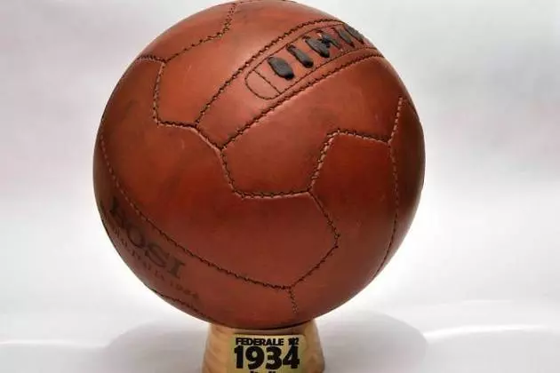

TelStar
Batizada como “Estrela da Televisão” - “TelStar”, foi a bola da primeira Copa do Mundo transmitida ao vivo, em
preto e branco. Em alguns jogos desta edição, a “TelStar” teve uma configuração de cores diferente e tornou-se o
design mais famoso de todos os tempos, sendo considerado o mais utilizado até os dias atuais.
A Jabulani foi a bola oficial da Copa do Mundo de 2010, realizada na África do Sul, e desenvolvida pela Adidas. Apesar de ser tecnologicamente avançada, a Jabulani gerou muita controvérsia entre jogadores e técnicos devido ao seu comportamento imprevisível. O nome "Jabulani" significa "celebrar" no idioma zulu, um dos mais falados na África do Sul. O design da bola é colorido, com 11 cores diferentes, representando os 11 jogadores em campo, as 11 línguas oficiais da África do Sul e as 11 comunidades que compunham o país.


A Brazuca é a bola oficial da Copa do Mundo de 2014, realizada no Brasil. Desenvolvida pela Adidas, a Brazuca foi projetada para oferecer um desempenho superior em campo e é conhecida por suas características inovadoras. O nome "Brazuca" é uma gíria brasileira que expressa o orgulho nacional e o espírito do povo brasileiro, refletindo a identidade do país como sede do torneio.